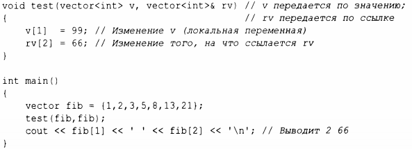
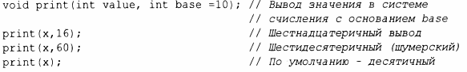
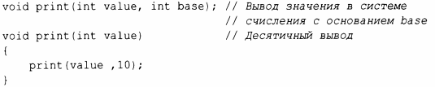

⇐3.6 Аргументы и возвращаемые значения функций 3.6.2 Возврат значения⇒
Сначала рассмотрим, как передать значение в функцию. По умолчанию мы выполняем копирование ("передача по значению"), но если мы хотим ссылаться на объект в среде вызывающей функции, то используем ссылку ("передача по ссылке"). Например:
Когда нас интересует производительность, мы обычно передаем малые значения по значению, а более крупные - по ссылке. Здесь "маленький" означает "что-то, что действительно дешево копируется". Точное значение термина "малый" зависит от архитеК1)'ры машины; хорошим эмпирическим правилом оказывается "малый размер не превышает размера двух-трех указателей".
Если мы хотим передавать аргументы по ссылке по соображениям производительности, но нам не нужно изменять аргумент, мы передаем константную ссылку, как это сделано в примере surn ().В обычном хорошем коде это, безусловно, наиболее распространенный случай: он быстр и не подвержен ошибкам.
Не так уж редко аргумент функции имеет значение по умолчанию, т.е. значение, которое считается предпочтительным или наиболее распространенным. Мы можем указать такое значение с помощью аргумента футщии по умолчанию. Например:
Вот более простая альтернатива перегрузки:
